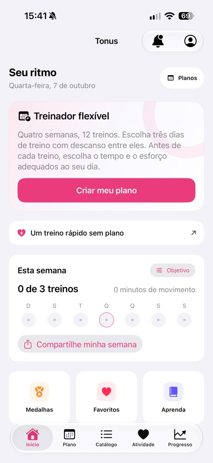
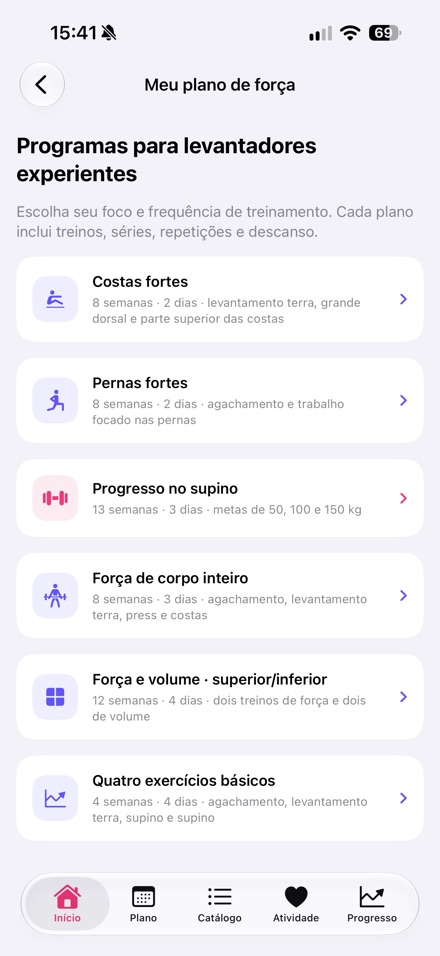
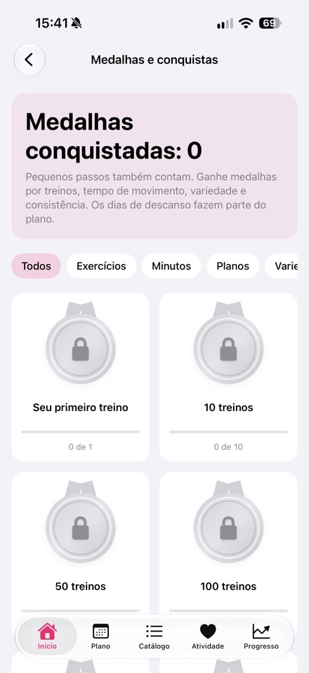

Por Nikita Revin, desenvolvedor do Tonus. Atualizado em 16 de outubro de 2026 para a versão 1.4 publicada na App Store.
Tonus é um aplicativo gratuito de treino para iPhone. Ele inclui sessões curtas em casa, um plano flexível e seis programas de academia. Não exige cadastro nem assinatura.
Kit de imprensa
Baixe as informações do app, o ícone e três capturas da versão publicada.
Baixar kit de imprensa (.zip)Tonus 1.4
- iPhone com iOS 17 ou posterior
- Acesso gratuito, sem cadastro, assinatura ou compras dentro do app
- Treinos em casa de 5, 10 ou 20 minutos, com opções sem saltos, em pé ou sem equipamentos
- Plano flexível de 12 treinos nos dias escolhidos; sessões perdidas são remarcadas
- Seis programas de academia, orientações de técnica, cronômetros e acompanhamento do progresso
- Apple Saúde opcional; histórico e dados de Saúde ficam no aparelho
- Planos e instruções escritas funcionam offline; vídeos online precisam de internet
- 60 exercícios com vídeos; plataformas externas podem exibir anúncios próprios
- Interface disponível em português
Capturas da versão 1.4 publicada na App Store



Pedidos de avaliação editorial
Nikita Revin · nik007rev@gmail.com
Tonus não oferece atendimento médico. Pare se sentir dor ou mal-estar. Se houver restrições de saúde, converse com um profissional qualificado.
Baixar Tonus